Magic Circle VFX Vol.4: Celestial — Suns, Stars & Eclipses
12 celestial spell circles (solar crown, total eclipse, zodiac wheel, orrery, galaxy spiral and more) that draw themselves in with a 24-frame cast and flow into a rotating 48-frame loop. Godot 4 scenes for 2D and 3D, a one-line MagicCircleCaster script, sprite sheets, PNG sequences and video.
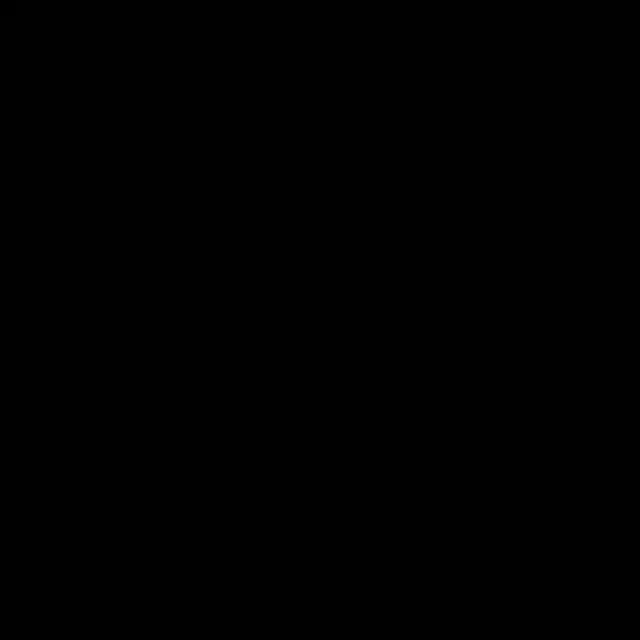
All 12 circles
Previews are shrunk to 160 px; the pack ships 512 px frames, 256 px sprite-sheet cells, additive (black background) and transparent versions.
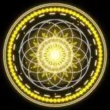
Solar Crown
24-frame cast → 48-frame rotating loop · 512 px frames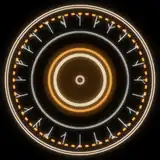
Total Eclipse
24-frame cast → 48-frame rotating loop · 512 px frames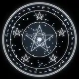
Starfall
24-frame cast → 48-frame rotating loop · 512 px frames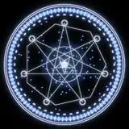
Constellation Chart
24-frame cast → 48-frame rotating loop · 512 px frames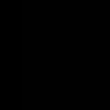
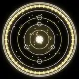
Orrery
24-frame cast → 48-frame rotating loop · 512 px frames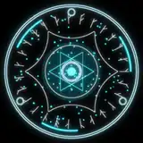
Comet Trail
24-frame cast → 48-frame rotating loop · 512 px frames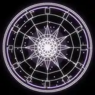
Zodiac Wheel
24-frame cast → 48-frame rotating loop · 512 px frames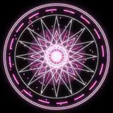
Nova Burst
24-frame cast → 48-frame rotating loop · 512 px frames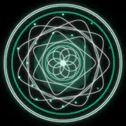
Aurora Veil
24-frame cast → 48-frame rotating loop · 512 px frames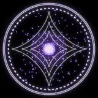
Galaxy Spiral
24-frame cast → 48-frame rotating loop · 512 px frames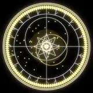
Astrolabe
24-frame cast → 48-frame rotating loop · 512 px frames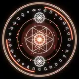
Solstice Gate
24-frame cast → 48-frame rotating loop · 512 px framesWhat's in the download
A Godot 4 project (2D AnimatedSprite2D scenes, 3D ground-decal scenes with an additive flipbook shader, demo scenes), sprite sheets, PNG sequences, WebM/MP4 video, and SKILL.md + catalog.json for AI coding agents. A free sample of 3 circles is on the itch.io page. Commercial use in your games is allowed; reselling the effects as assets is not.